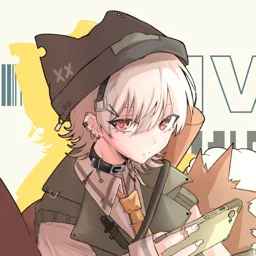

ABOUT
關於我

我是賴奕帆，宜蘭羅東人，目前讀高三資訊科。我在做多元平權倡議，除了到現場參與行動，也寫程式，看到的事情會寫下來。
我在做什麼
我關注身心障礙者權益、青少年精神衛生、性別平權、大麻除罪化、交通改革，以及兵役體位區分標準，參與的團體如下：
- 福爾摩沙自閉大公社：創辦人，詳細介紹在 asdtw.org。
- 社團法人臺灣障礙青年協會：秘書處會員，持續協助協會擺攤和辦活動。
- 保障未成年身心科就醫自主：擔任倡議群組的共同發起人，推動的提案在公共政策網路參與平台達 5,000 份附議。
- 行人零死亡推動聯盟、下一代人本交通促進會、台灣綠草安全教育協會、捍衛全台學權行動、役起發聲，以及時代力量。
為什麼做這些事
我會出來做社會倡議，原因就是「正義」。我經歷過家暴、雙親離異、重度憂鬱症、求助，還有自閉症的遲獲診斷，也看到很多青少年跟我一樣，正在經歷這些狗屁倒灶的事，卻沒有任何人在幫他們。我不想變成那群不管事的人。
想一起做事或聊聊
備註
個人發言僅代表個人立場，與所屬團體無關。